Десерт «Орешки со сгущенкой»
Десерт «Орешки со сгущенкой» — это печенье, напоминающее орехи и наполненное сгущенным молоком. Их форма делает их особенно привлекательными для детей. Печенье получило свое название «орешки» благодаря тому, что состоит из двух песочных «скорлупок», склеенных домашним кремом. Рецепт был максимально простым из-за ограниченного ассортимента продуктов, доступных советскому населению. Трудно сказать, когда именно оно появилось, но по одной из версий, его история начинается в 1952 году с производства специальных форм для выпечки. В этом году были созданы первые «орешницы», которые позволяли выпекать «скорлупки» из теста. Эти формы состояли из двух литых металлических дисков, которые фиксировали тесто с обеих сторон, придавая ему форму пустых половинок скорлупок. В 1953 году рецепт печенья был опубликован в сборнике «О вкусной и здоровой пище». Позже орешницы начали выпускать в различных формах — грибочков, шишек и морских ракушек.
Для начинки использовали вареную сгущенку, которую готовили в домашних условиях. Для этого банку покупной сгущенки кипятили в кастрюле с водой около двух часов, открывая только после полного остывания. Чтобы избежать взрыва банки из-за перепада давления, она всегда должна быть покрыта водой. С началом промышленного производства вареного молока процесс приготовления орешков стал значительно проще.
Рецепт «Орешков со сгущенкой» для орешницы (подходит для газовой и электрической):
- сахар — 100 г
- сливочное масло — 300 г
- мука — 300 г
- яйцо — 1 шт.
- вареная сгущенка — 380 г
- Сливочное масло должно быть мягким. Сгущенку можно купить готовую или сварить самостоятельно.
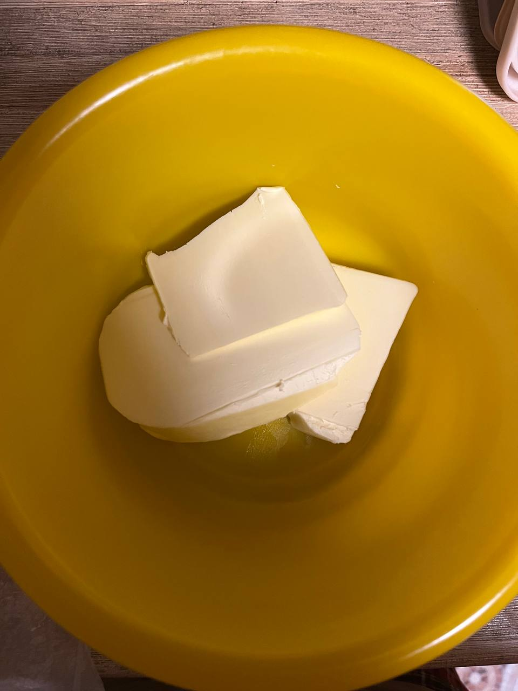
- Для теста соедините мягкое сливочное масло с сахаром.
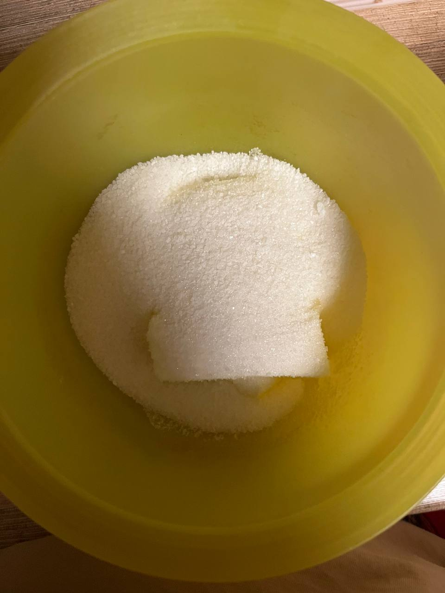
- Добавьте яйцо и все тщательно перемешайте, можно использовать миксер.
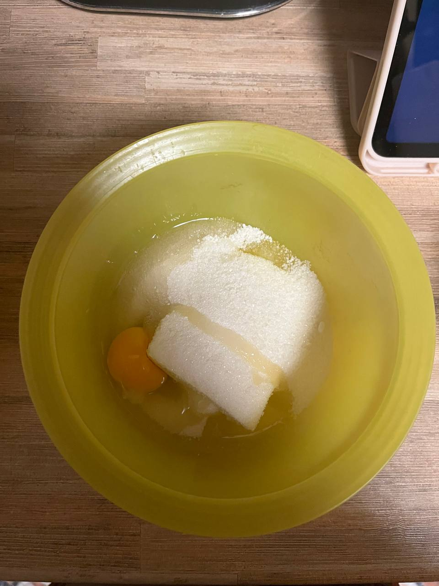
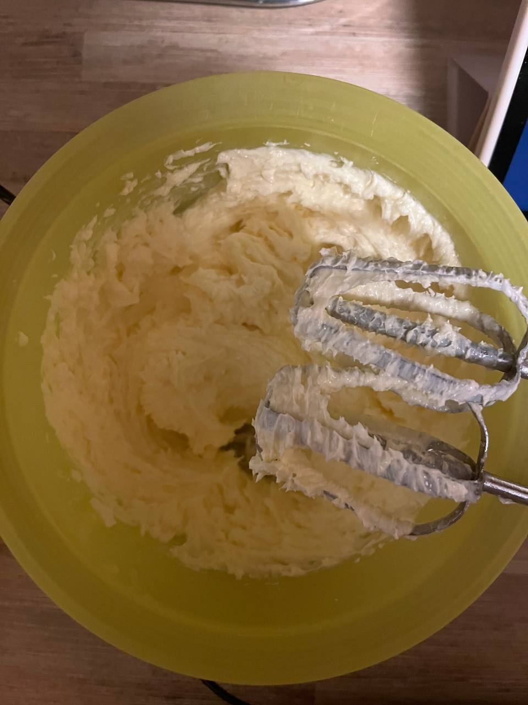
- Просейте муку через сито и постепенно добавляйте в тесто, не добавляя лишней муки. Как только тесто станет однородным и сформируется в комок, больше его не месите.
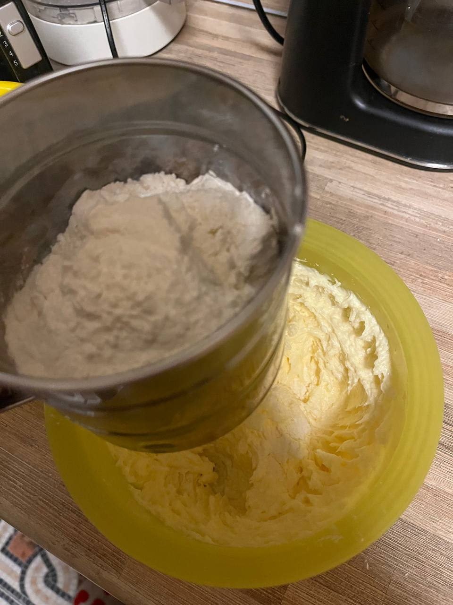
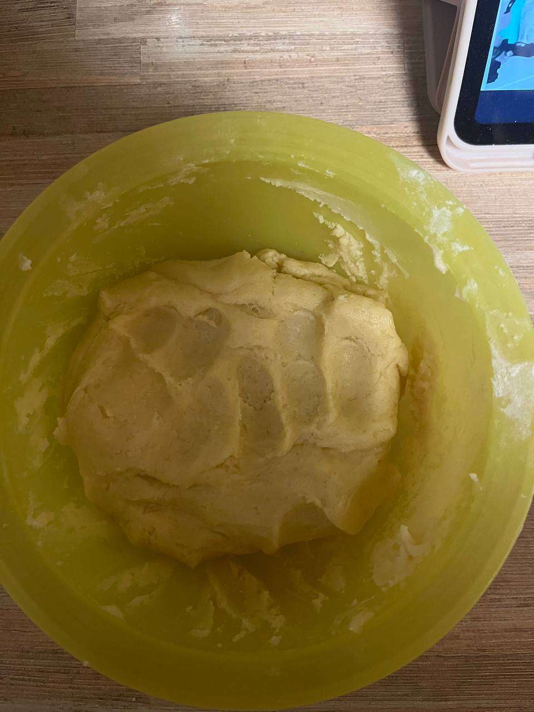
- Из теста скатайте шарики размером чуть меньше грецкого ореха.
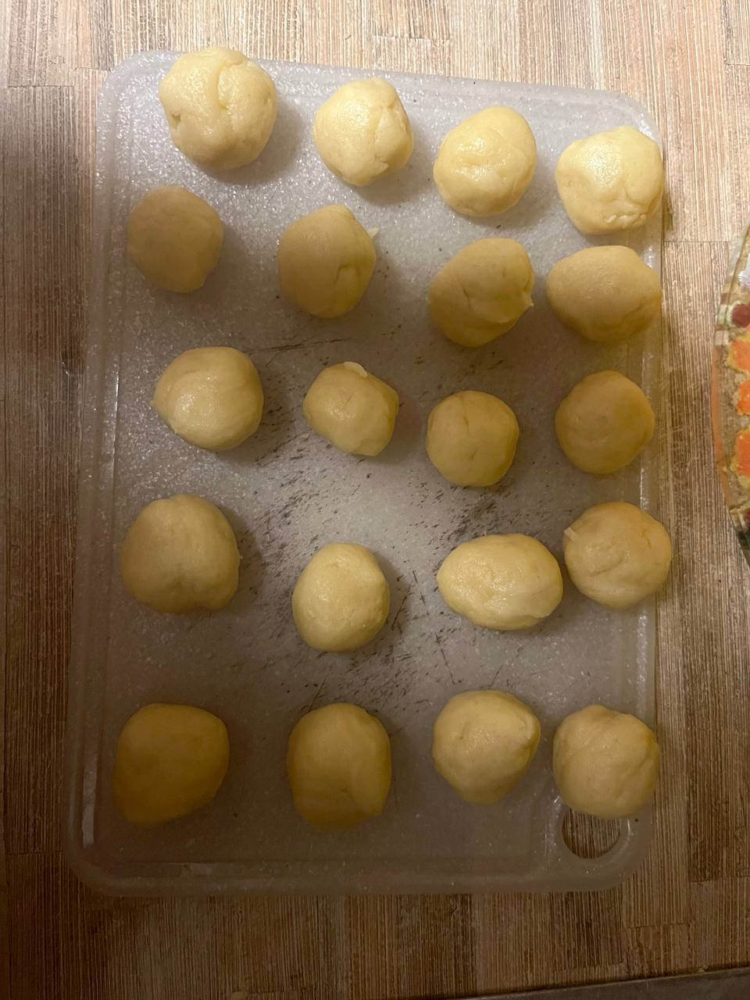
- Поместите шарики в орешницу, предварительно смазав форму растительным маслом.
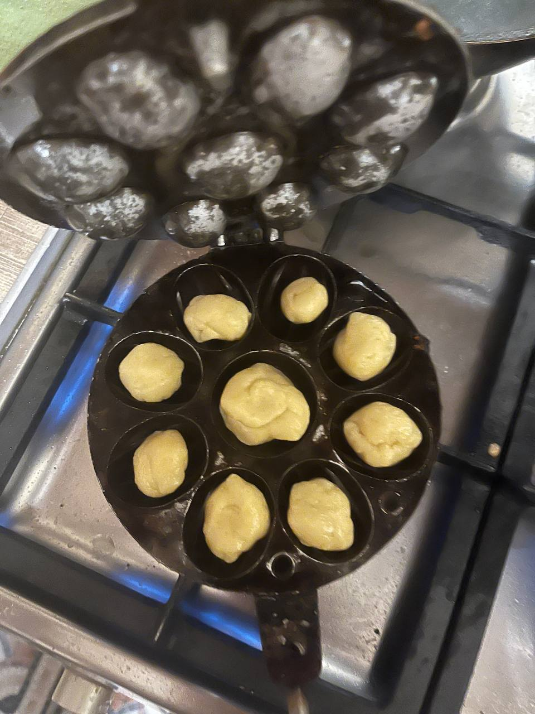
- Накройте второй половиной формы и выпекайте скорлупки на небольшом огне. Вокруг газовой конфорки можно выложить лист фольги, чтобы избежать загрязнения плиты.
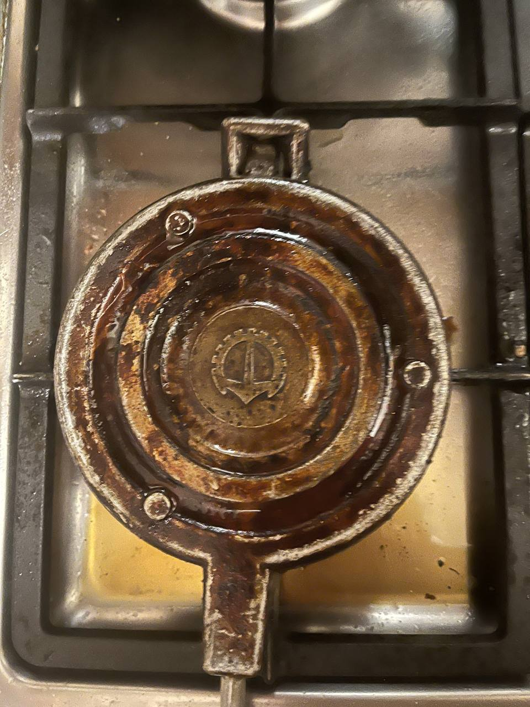
- Испеките все шарики и выложите их в чашу.
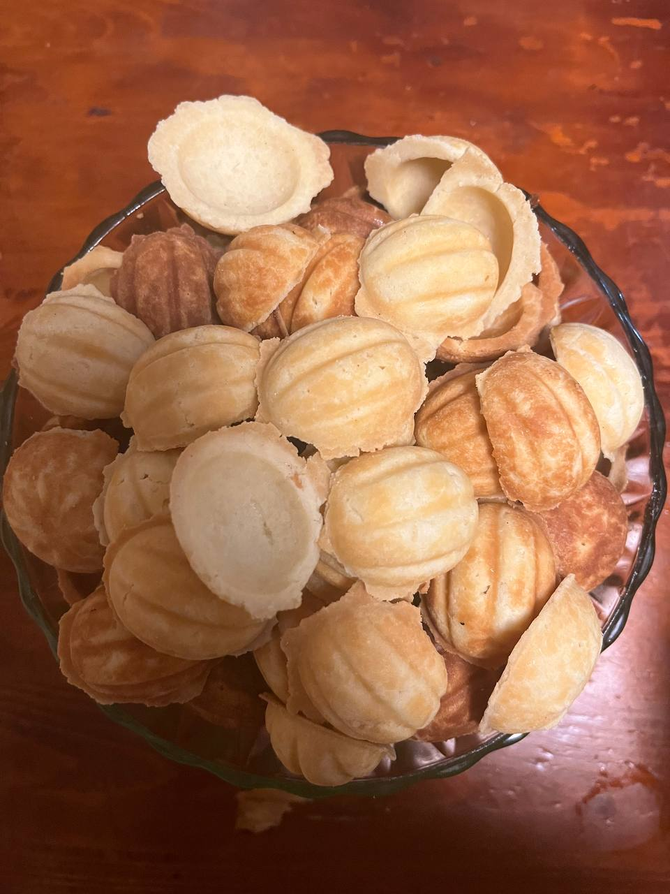
- Откройте банку с остывшей вареной сгущенкой и наполните половинки орешков, затем слепите их вместе.
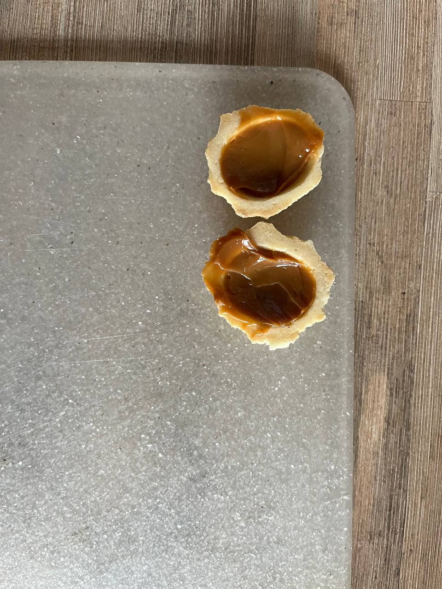
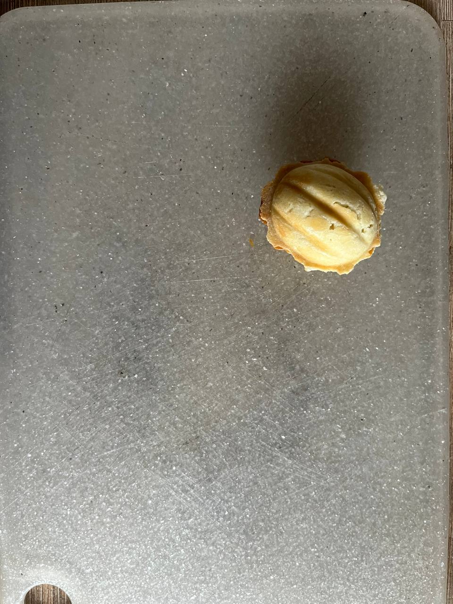
- Удалите лишнее по краям острым ножом.
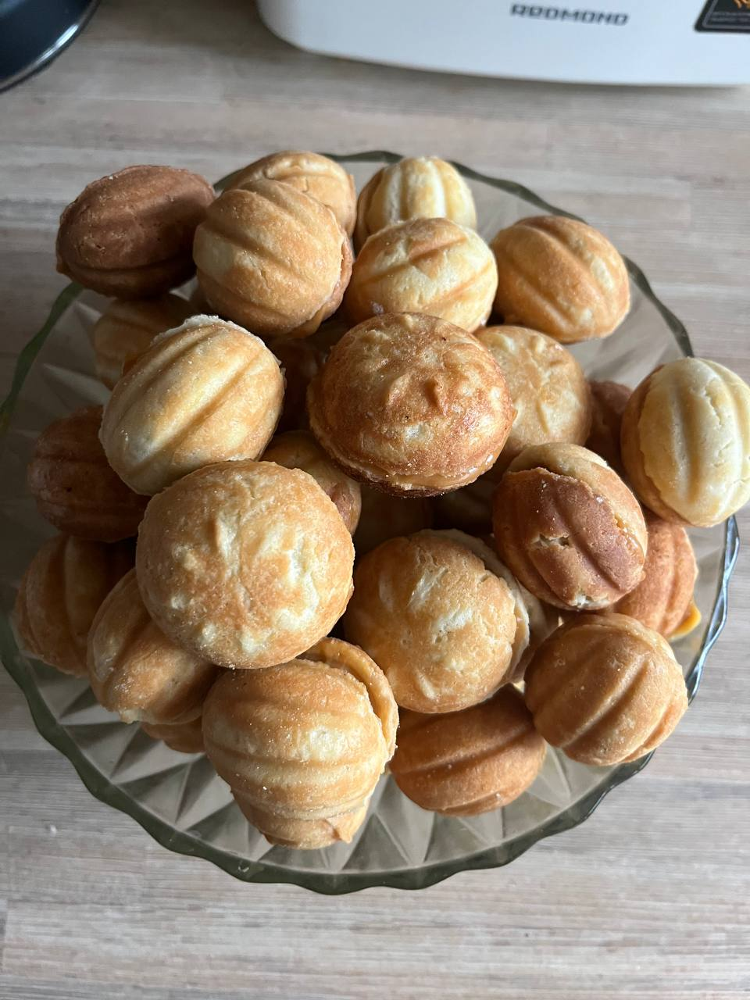
← Назад на главную